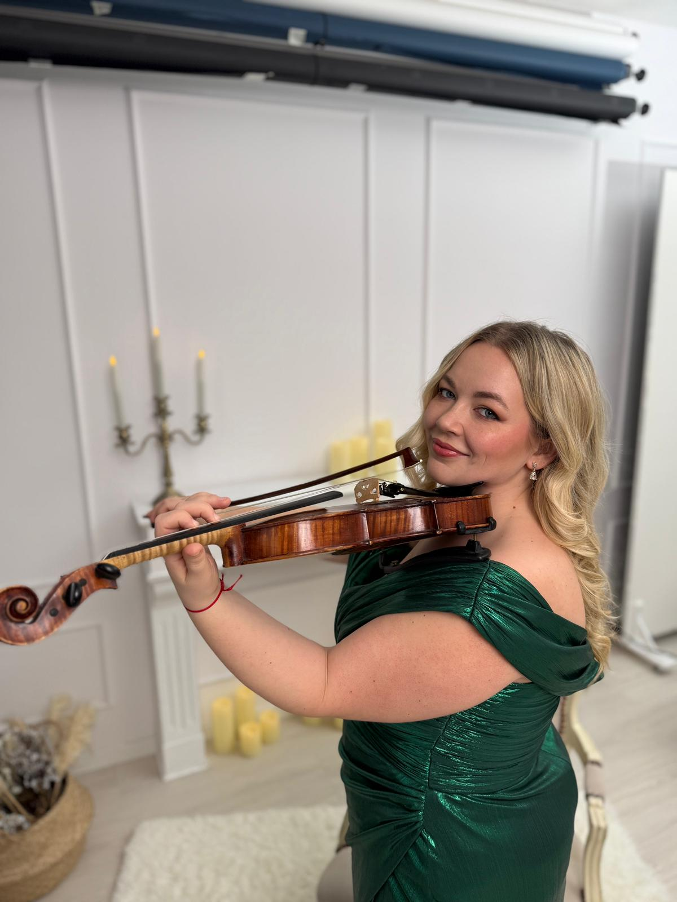
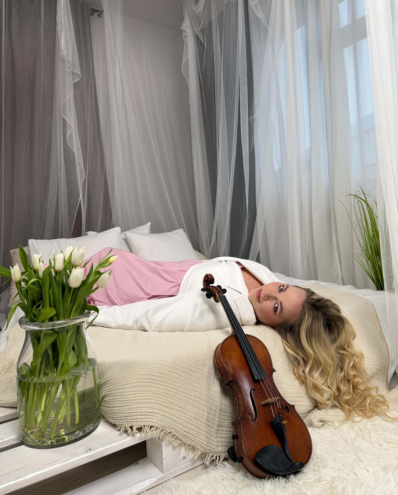

Každý moment si zaslúži hudbu, ktorá ho premení na nezabudnuteľný zážitok.
Živá husľová hudba pre svadby a výnimočné eventy.

Hudba ma sprevádza už viac ako 20 rokov a stala sa prirodzenou súčasťou môjho života aj práce v orchestri Slovenského národného divadla a Slovenského rozhlasu. Najväčšiu radosť mi prináša moment, keď sa hudba dotkne ľudí a stane sa súčasťou ich spomienok. Práve preto prinášam husľovú hudbu na svadby a eventy, kde sa emócia a atmosféra spájajú do jedného nezabudnuteľného zážitku.
View PortfolioVeľkou výhodou môjho hrania je možnosť prispôsobiť repertoár vašim predstavám a zahrať takmer akúkoľvek skladbu na želanie. Nižšie nájdete výber z môjho repertoáru, ktorý môžete použiť ako inšpiráciu. Rada vám zároveň poradím a pomôžem s výberom skladieb tak, aby dokonale ladili s vašou udalosťou a atmosférou.
Spojenie huslí a harfy prináša jemnú a elegantnú hudobnú atmosféru, ktorá sa dokonale prispôsobí akémukoľvek typu svadobného obradu. Či už ide o intímnu záhradnú ceremóniu alebo väčší svadobný obrad, toto hudobné spojenie vytvára výnimočný a romantický zážitok s prirodzenou noblesou a harmóniou.
Sláčikové kvarteto Memories Quartet prináša bohatý, plný a harmonický zvuk, ktorý vytvára výnimočne elegantnú a luxusnú hudobnú atmosféru. Vďaka spojeniu štyroch nástrojov dokážeme dotvoriť aj tie najväčšie svadobné obrady či eventy s noblesou a silným hudobným zážitkom.
Husle a tanec je moderná a dynamická hudobná kombinácia, ktorá prináša energiu, emóciu a jedinečný zážitok do každej udalosti. Vďaka flexibilnému štýlu vieme interpretovať široké spektrum žánrov – od klasiky až po moderné hity – a prispôsobiť hudbu presne atmosfére vášho svadobného dňa či eventu.
Či už plánuješ luxusnú svadbu alebo súkromné podujatie, som tu na to, aby som priniesla elegantnú sláčikovú hudbu.
Email: sultaniasmusic@gmail.com
Telefón: +421 123 456 789